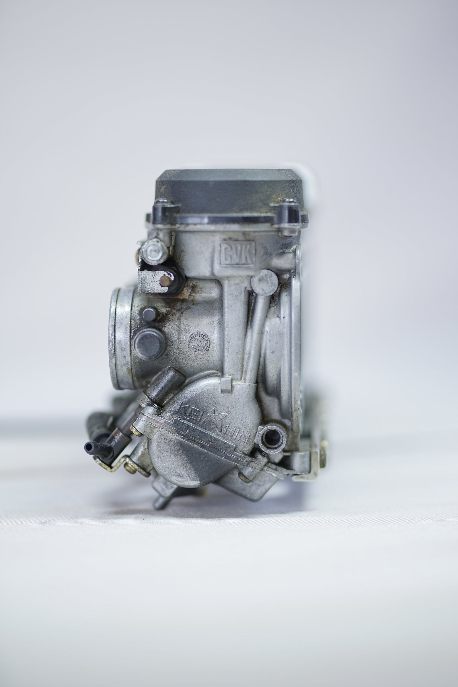

Carburateurs werken na een revisie bij ons weer als nieuw dankzij een geavanceerde reinigingstechniek: ultrasoon reinigen. Met krachtige, microscopisch kleine trillingen maken we vuil, afzettingen en zelfs de fijnste verontreinigingen los, ook op plekken die je met de hand niet bereikt. We nemen je mee achter de schermen om te laten zien hoe deze methode werkt.
Carburateur schoonmaak geperfectioneerd
Heb je je ooit afgevraagd hoe wij ervoor zorgen dat je carburateurs na een revisie weer optimaal presteren? Het antwoord zit in ultrasoon reinigen. Het is een vast en essentieel onderdeel van ons revisieproces, omdat het elke carburateur grondig schoonmaakt en klaarmaakt om weer soepel te draaien.
Stap 1: de startpositie
Dit is een carburateur voordat hij wordt ondergedompeld in ons ultrasoon reinigingsbad. Zoals je ziet, kunnen carburateurs na verloop van tijd flinke vuil- en afzettingen verzamelen. Die aanslag kan de prestaties merkbaar beinvloeden.
Stap 2: de transformatie
Hier zie je dezelfde carburateur nadat hij een behandeling in ons ultrasoon reinigingsbad heeft ondergaan. De resultaten spreken voor zich. De ultrasone golven veroorzaken kleine, krachtige trillingen die vuil, afzettingen en de kleinste verontreinigingen losmaken en verwijderen. Het resultaat is een carburateur die er weer als nieuw uitziet en optimaal presteert.
Wil je meer weten over onze revisieprocessen of over hoe ultrasoon reinigen precies werkt? Neem contact met ons op en ontdek hoe we je carburateur weer in topconditie brengen.